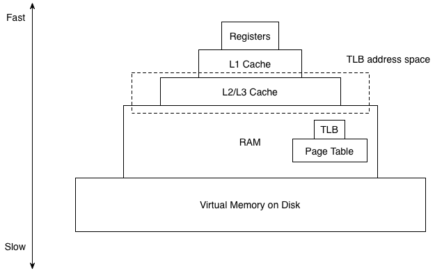
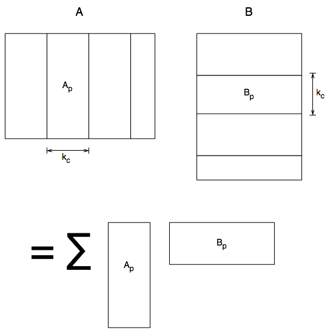
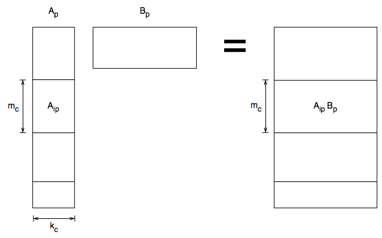
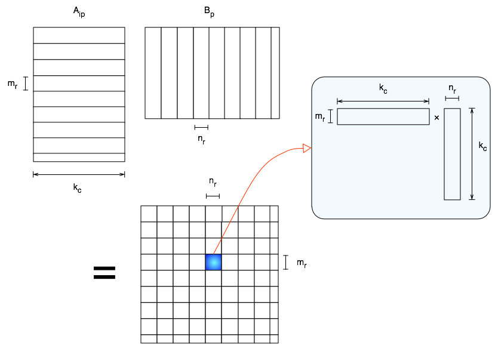

How to multiply two matrices at peak performance?
Introduction
This essay will discuss the principles underlying the coding of high performance matrix multiplication in libraries such as ATLAS1 or OpenBLAS.2 Those provide implementation of the so-called BLAS, for Basic Linear Algebra System. This is a comprehensive set of the typical operations with which any algorithm manipulating matrices and vectors in a linear manner can be written, i.e. linear combinations, matrix-vector products, matrix-matrix products, etc. BLAS is designed to be efficient on single or multi-processor systems with relativity fast communication between the CPU’s and they are tuned to the class of processors which have dominated computing since the mid-90’s, which are characterised by a deep memory hierarchy, the famous L1, L2, L3, … caches.
The plan of this article is as follow. First we will explain why efficient matrix multiplication is of paramount importance for the whole of the field of computational linear algebra. Then we will explain the salient point of those “modern” architectures BLAS are optimised for.
On the importance of matrix multiplication
Solving systems of linear equations, computing the eigenvalues and the eigenvectors of a matrix, or solving a linear least-squares problem, to name only a few applications of linear algebra, are very common tasks in a wide range of fields. Huge matrices are not unusual (e.g. least-squares with about 100000 parameters and millions of observations) and therefore extremely fast algorithms are compulsory for many applications. It was discovered in the 80’s that the computer architectures emerging at the time, were most efficient at performing matrix multiplications. As a result, all classic linear algebra algorithms have been rewritten throughout the 90’s so as to perform nearly all floating point operations as part of matrix multiplications, and more generally of the so-called level 3 operations, which are defined as those such that the number of floating-point operations (flops) scales as a third-order polynomials of the matrix dimensions whereas the number of matrix elements that are touched scales as a second-order polynomials of those dimensions. As a result, the speed of modern algorithms such as those provided by LAPACK3 almost entirely hinges on the speed of those level 3 operations. They include solving triangular system of equations with multiple right-hand sides and rank-k updates (e.g. the symmetric one which reads $C \rightarrow C + \alpha A A^T$), besides matrix multiplication.
The reason for the efficiency of level 3 operations is rooted in the memory hierarchy of modern architectures, which we are therefore going to discuss next.
Memory hierarchy
Modern architectures are characterised by a strong memory hierarchy, whose key layers are sketched on the following diagram.

There is a huge speed difference between the different memory layers. For example, on “recent” x86 processors, it takes 1 cycle to add two floating point values stored in registers, about 4 cycles to load a value from L1 cache into registers, about 10 cycles to do so from L2 cache, from 40 to a few hundred cycles to load a value from L3 cache, and finally about 60 ns to get a value all the way from DRAM. Thus we should design our algorithms so that once a chunk of data has been moved upward through this memory hierarchy, as many floating point operations are performed on it that do not require further data motion.
Level 3 operations are an ideal case in that respect. Let us take the example of the matrix product $C = A B$ where all matrices are of dimension $n \times n$, where $n$ is small enough that $A$, $B$ and $C$ fit in the processor caches. By definition, for any $i=1,\cdots,n$ and any $j=1,\cdots,n$
This requires to move $O(n2)$ matrix elements from RAM to the caches and it will then take $O(n3)$ flops. Thus the cost of moving each matrix element is amortised over $O(n)$ flops. This property of matrix multiplication, and by extension all the other level 3 operations that share this $O(n3)$ vs $O(n2)$ property, is the key to their performance. Clearly, we should choose as big a value of n as possible to maximise the number of flops per memory operation, but under the constrain that all matrices fit in the caches.
But then, how does this apply to general matrices that are too big to fit in the caches? The trick is to slice them into blocks that do fit in those caches and to multiply those blocks. This is the subject of the next section.
General matrix-matrix product (GEMM)
The key will be to dice and slice matrices in the right manner and we will start with a picturesque description of this decomposition. We are going to follow as closely as possible the prescriptions presented in Goto4 that are at the core of GotoBLAS2, one of the fastest implementation of BLAS (this project is now continued under the name of OpenBLAS2).
Given a matrix $A$ of dimension $m \times k$, a matrix $B$ of dimension $k \times n$ and a matrix $C$ of dimension $m \times n$, we are interested in the operation $C = C + A B$. A fast implementation is obtained by a three-layered decomposition into blocks and panels.
The first layer is a decomposition of $A$ into vertical panels and of $B$ into horizontal ones:

The rightmost block of $A$ (resp. the bottommost block of $B$) may have less than $k_c$ columns (resp. rows). Each product $A_p B_p$ is called a general panel-panel product (GEPP) by Goto et al. For matrices with large $m$ or large $n$, either of these panels may not fit in the L1/L2 caches. As a result, one relies on a second layer of decompositions: each $A_p$ is cut into blocks. The resulting decomposition of GEPP can then be represented as follow.

Again the bottommost block has likely a dimension smaller than $m_c$. The general block-panel product $A_{ip} B_p$ is called GEBP by Goto et al. All the floating point operations are performed in GEBP. This is therefore the only place to optimise to the fullest. It is especially essential to choose dimensions $k_c$ and $m_c$ as large as possible to amortise the memory operations but not so large that those blocks and panels would trash the L1/L2 caches and the TLB (c.f. Appendices). Specifically, Goto and van de Geijn advocates that the following properties should hold:
- TODO
The values $k_c$ = 256 and $m_c$ = 512 fit well with a wide variety of processors, especially the most common x86_64 varieties, as listed in Goto4 and in the source code of OpenBLAS. They are however by no means optimal. If one want the utmost performance, one should adapt those values to each architecture by solving the constraints described above, at least approximately.
Eventually, the operations shall be performed on the CPU registers. The third and last layer of blocks is designed to use the registers as efficiently as possible. The left-hand side is split into thin slices of rows whereas of the right-hand side is split into thin slices of columns, resulting in the decomposition of GEBP into a grid of tiny block, each being the product of two thin panels:

The values of $m_r$ and $n_r$ are chosen so that each tiny block of the product can be held entirely in CPU registers. The only memory operations involved in the computation of each of these tiny block consist in loading the elements of the two thin panels into the registers. Moreover the loops over the $m_r$ rows of the left-hand side and over the $n_r$ columns of the right-hand side can be entirely unrolled because $m_r$ and $n_r$ are very small. This leaves only one loop over $k_c$ columns of the left-hand side and $k_c$ rows of the right-hand side during the execution of which the elements of the tiny block of $C$ are updated entirely inside registers. When this loop terminates, and only then, the corresponding block of $C$ is updated in RAM. $m_r$ and $n_r$ are highly dependent on the number of registers and the size of vector units (the SIMD type commonly found on modern processors5) featured by the processor. For a purely scalar processor, $m_r$ = 2 and $n_r$ = 4 usually provide a bottom line.
Appendix: TLB
The role of L1/L2/L3 caches and of virtual memory is mundane knowledge but we believe it not to be the case for the TLB. It is however crucial to correctly determine the constrains on the block size above. We will therefore dedicate the rest of this section to it. First, we shall remember that physical addresses in RAM and virtual addresses on disk are mapped onto each other by the page table, which does also keep track of whether a memory page is loaded in RAM, or swapped to the disk. In order to speed up the retrieval of pages from the disk, most architectures cache the information about the most recently used pages in a so-called Translation Look-aside Buffer (TLB). It roughly works as follow. When a line of L2 cache is to be updated with data starting at a given address in memory, the system looks up for that address in the TLB:
- if it is there, then it proceeds with the requested memory operation: loading the appropriate memory from the disk if it is not already in RAM, and then moving data from RAM to L2 cache;
- if not, (so-called TLB miss), the address is searched in the page table; when it is found, the TLB is updated, and then the memory operation takes place as in the previous case.
Contrary to a L1/L2 cache miss that can be prevented by prefetching data, a TLB miss always stalls the CPU because of the TLB update and it should therefore be avoided at all cost by working with chunks of data that fit inside the TLB address space.
Bibliography
-
LAPACK Users’ Guide. E Anderson, Z Bai, Christian H. Bischof, S Blackford, J Demmel, J Dongarra, J Du Croz, A Greenbaum, S Hammarling, A McKenney, and D Sorensen. Society for Industrial and Applied Mathematics, Philadelphia, PA, Third. ↩
-
Kazushige Goto and Robert A. van de Geijn, Anatomy of high-performance matrix multiplication, ACM Transactions on Mathematical Software 34 (2008), no. 3, 12:1–25. ↩ ↩2
-
SSE2/3/4 on x86 and x86_64, NEON on ARM, Altivec on PowerPC and Cell, VIS on SPARC, just to name a few popular processors, ↩